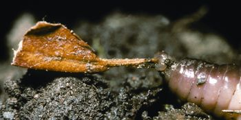
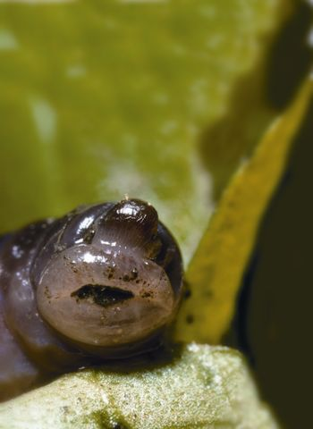
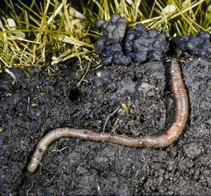
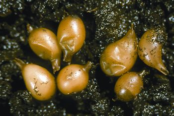
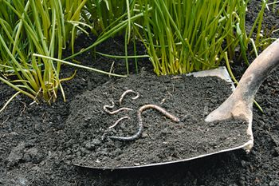
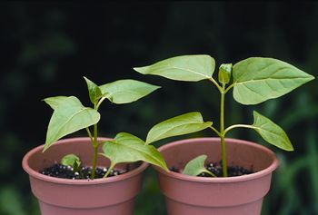
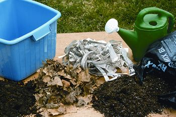

Vermicompost, or compost made mostly by earthworms, is seven times richer in plant nutrients compared to compost created mostly by fungi and bacteria, and recent studies suggest that small amounts mixed into soil suppress diseases, slugs and insects. Numerous studies have shown that when only 10 percent of the volume of potting soil used to grow seedlings is vermicompost, a huge range of plants simply grow better - from carrots to tomatoes to zinnias. It’s easy to entice earthworms to work their magic right in your garden, or you can make vermicompost in enclosed bins, or both! In addition to improving soil chemically with their castings (a mixture of manure and slime emitted through the worms’ skin), earthworms improve it physically by opening airways and drainage holes as they travel.
Notice that I did not tell you to buy worms. That’s because we’re recommending “catch-and-release” worm composting, which makes use of the earthworms present in your own yard. These species have already demonstrated their satisfaction with your unique climate and soil, though few (or none) of them are likely to be red wrigglers (Eisenia fetida), the species used in commercial vermicomposting systems. That’s ok. Common red worms (Lumbricus rubellus) and other species plucked from compost bins or soil (or rescued after flooding rains) usually make well-behaved captives, and you can usually coax larger night crawlers (L. terrestris) to colonize any spot by piling on plenty of mulch.
Indeed, when it comes to using earthworms to build soil fertility, Clive Edwards, Ohio State University entomologist and author of Earthworm Ecology - the academic bible on earthworms - thinks night crawlers deserve top priority. “The best thing is to obtain some L. terrestris and inoculate your garden with them. They are the most important species in promoting soil fertility,” he says.
Night crawlers are widely available as fishing worms, but before you buy any, try these simple setups to give resident night crawlers a helping hand.
Maintain permanent pathways that are mowed or mulched, so there is always a layer of decomposing litter at the surface. Night crawlers build semipermanent burrows, where they stockpile food gathered at night. Providing safe year-round habitat is essential to keeping populations high.
Use the spaces between widely spaced squash or melons as night crawler condos. Place wet newspapers or cardboard over the surface (they love the shelter), sprinkle raw oatmeal over the newspapers (they love the food), and top with 2 inches of coarse, moist compost. Repeat the layers and top off with grass clippings, straw or another attractive mulch. If you build it, they will come.
Conduct composting projects in your garden, especially slow heaps that will basically sit there until they are done. Night crawlers often build deep, elaborate burrows beneath piles of slow compost.
Try straw bale beds (see explanation, How to Make Instant No-dig Garden Beds), or simply let a pile of old hay rot atop an infertile spot. The biggest, most energetic night crawlers I’ve ever seen grew into giants beneath a bale of decomposing hay.
Night crawlers need to burrow like birds need to fly, so they are only marginally happy when reared in bins. Yet common red worms or field worms (Aporrectodea species, which can be gray, pink or even green) do fine in bins as long as you provide them with a pleasing habitat (See “Captive but Comfortable Environments for Worms,” below). When I transfer worms from my garden to the all-you-can-eat buffet conditions in a bin, they transform the mixture of bedding and food into finished worm compost in four to five months. The fresh compost also includes hundreds (or thousands) of cocoons, so as I use it in my garden, I simultaneously distribute a new generation of ready-to-hatch earthworms.
With few exceptions, the earthworms that inhabit North American gardens are exotic species introduced from Europe (the natives were wiped out in the last ice age), and Edwards points out that there are no guarantees that they will prosper in a particular space. “Available organic matter is the key to building up earthworm populations, but it may take several years because their time from cocoon to maturity is four to 12 months,” he says.
Working with worms that have already shown their satisfaction with your climate and soil by simply being there simplifies this challenge, but even happily naturalized earthworms will not stick around unless the soil is moist and rich in organic matter. Digging in compost between plantings coupled with heavy mulching does the trick in most climates, though many worms do head for deeper digs as the weather heats up in summer. Dotting the garden with piles of moist organic matter that are shaded by tall plants is an easy way to keep earthworms up in the root zone in hot weather.
Earthworm castings are rich in plant nutrients and growth-enhancing humic acids, which the worms distribute as they move through moist soil. I like to keep a worm bin going indoors in winter, but in the summer it’s simpler to make worm compost outdoors. Here are three simple setups:
When container plants expire, dump the used potting soil in a large bucket until you have a couple of gallons. Add a dozen or so earthworms collected from your garden or compost pile, sprinkle the surface with corn meal or oatmeal, then cover with 1 inch of grass clippings. Keep the bucket in a moist, shady spot protected from rain for a month. The reconditioned potting soil (with worms removed, see “How to Herd Worms,” below) will contain enough worm castings to fertilize several needy containers.
In a plastic storage bin perforated with ventilation holes, toss together equal parts wet newspaper or cardboard strips, soil and compost until the mixture is 10 inches deep. Bury a pint or so of grain-based food waste such as old bread, flour, rice or cooked pasta just below the surface, and add 200 or more worms. Snap on the cover, and place the bin in a shady place (placing the bin in a hole will help maintain optimum temperature and moisture). In fall, use the contents of the bin to top-dress carrots and beets - two crops that respond dramatically to vermicompost.
To encourage earthworms to congregate in one place, dig a hole about 16 inches deep and equally wide, and refill it with veggie and fruit trimmings from your kitchen and garden, topped with 2 inches of soil. Cover with boards or an old tarp and forget about it for a month or two. Dig up your buried treasure in the fall, and transfer some of the worms to an indoor bin. Move the rest to spots in your garden near compost piles, grassy pathways or deeply mulched beds. They will know what to do!
Whichever worm projects you decide to try, this time of year you should have no trouble recruiting willing worm workers from your own garden. Just poke around beneath mulches, compost piles, or clumps of grassy weeds (a favorite earthworm hangout). After you have collected a few dozen earthworms, give them a job. You’ll be doing your part to fulfill the earthworms’ destinies, because every last one of them was born to spend its life turning decaying organic matter into rich, fertile soil.
Keeping an indoor worm bin is a great winter project that gives a double payoff in spring: several gallons of fabulous free fertilizer, and thousands of worms (and cocoons) to release into your garden in spring. For certain success, follow these five simple guidelines:
Location. To mimic underground conditions, choose a dark, cool place such as a basement or remote closet where temperatures range between 50 and 65 degrees.
Housing. Modest-sized plastic storage bins or other moisture-proof containers (such as large, ventilated cat litter jugs) are ideal. Dark-colored containers shield captive worms from light; cover translucent containers with a blanket or paper bag to block out light.
Bedding. Soak a medium-sized cardboard box in water before tearing it into ragged 3-inch pieces, or do the same with a 4-inch stack of newspapers or junk mail. Mix with 1 gallon of compost or loamy soil (avoid using sand or sandy soil, because sharp sand particles are abrasive to soft-bodied earthworms). Allow one or two days for the moisture level in the mix to stabilize before adding worms.
Food. Earthworms in new bins respond best to grain-based foods at first, probably because they decompose so quickly. Leftover cornmeal, oatmeal, old bread or cooked rice, buried in small caches just beneath the surface, make wonderful starter foods because they will rot within days, and earthworms prefer food that is active with working fungi and bacteria. Used coffee grounds (with filters) can simply be dumped on top. When feeding worms kitchen waste, wait until the buried food disappears to add more.
Water. Check a new bin weekly for a month to make sure the bedding is uniformly moist. After that, your worms will be just fine even if you forget about them for weeks at a time. But that’s not likely to happen because keeping an indoor worm bin is so much fun!
You can call a dog or shoo a cat, but the best way to move earthworms is to herd them with light. To harvest vermicompost from a bin, gently pile a cone of material from your worm bin on a flat surface in bright light and wait about an hour. The worms will form a dense mass in the core of the cone.
Occasionally earthworms decide to leave a bin that’s become too crowded or damp. You can wick out excess moisture with cigars made of tightly rolled dry newspaper (which can then be torn into new bedding). Until you can set things right, prevent runaways by removing the bin’s cover and keeping a light on at night.
Tillers are murder on earthworms, but even gentle hand cultivation causes casualties. A week or so before cultivating a bed that’s well-populated with earthworms, set up a haven nearby such as a compost pile, mulched pathway or a cache of buried food scraps. Meanwhile, allow the place you plan to dig to become dry. Many worms will migrate to the better habitat, escaping a tragically premature end.
|
 DWIGHT KUHN A night crawler pulls a leaf to its burrow. |
 DWIGHT KUHN Worms just want to be your friend! |
 DWIGHT KUHN Cross-section of an earthworm burrow, with castings at the burrow entrance. |
|
 DWIGHT KUHN An earthworm’s time from cocoon to maturity can be four to 12 months. |
 DWIGHT KUHN Earthworms in soil. |
 DWIGHT KUHN A compost experiment. The plant on the right reaps the benefits of earthworm castings in its soil. |
|
 DWIGHT KUHN Dark-colored plastic storage bins filled with loamy soil, newspaper strips and leaves make great worm hotels. |
|
|